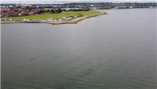
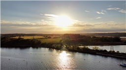
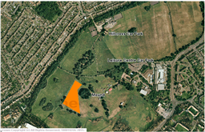
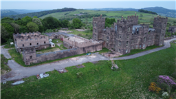

Where can I fly my drone in the UK?
If you are looking for lovely places to fly your drone without breaking the law or infringing on anyone's right, well look no further as we have some wonderful places for you.
We have gone to great lengths to find the best drone flying locations in the UK. You can view images and videos posted by other pilots.
You can also share or suggest other flying locations
Where to fly your drone
Baiter Park
 Outstanding spot for fly bys over baiter park, poole park, the old quay, whitecliff park, salterns marina, and not forgetting brownsea Island if you have the balls! Loads of watercraft to follow including jet skis, sailboats, sunseekers, container ships and the ferry to France if you time it right! Big open spaces ideal for practice Land owner permission not required.
Co-ordinates: 50.71088, -1.973086Rockley Park
Drive through Rockley Park to the boat club at the end of the road. Great views across Lytchett Bay, towards the mouth of Wareham River and to the islands in the harbour. Top spot in day and for sunsets. Does sometimes get busy in day. Be brave, fly over water! Land owner permission not required.
Co-ordinates: 50.71905, -2.040561Trough Brook
You can park at rigg lane car park and then there's a little walk, some up hill to the spot. There is a play park in the field but it is a wide area and was able to fly without any issues or complaints. Tilgate forest has posters all over saying no drone flying the playing fields do not and Crawley Council don't have any bylaws in place.
Co-ordinates: 54.03568, -2.720963Moden Park Permitted fly zone
There is a play park in the field but it is a wide area and was able to fly without any issues or complaints. Tilgate forest has posters all over saying no drone flying the playing fields do not and Crawley Council don't have any bylaws in place.
Co-ordinates: 51.3923, -0.2128Riber Castle, Derbyshire

Park on Riber Road just before the T-junction then follow it on foot past the hall until it becomes the public footpath that runs down to Starkholmes. Just over the crest of the hill, where I have placed the marker, is a small field which is perfect for TOAL. Contentiously, the Castle (Hall) itself has been undergoing conversion into apartments for several years and as such is fenced off and allegedly guarded 24/7. The location commands great views across the valley to Matlock. Land owner permission not required.
Co-ordinates: 53.12884, -1.543365Uphill Beacon
Parking along uphill way, wharf side tearooms for refreshments or pubs along uphill way. You'll see the foot bridge over the River Levern. If you cross it and then go right or left and drop down on to the lower path you can access the flat sandy banks which are excellent TOAL spots. Watch out for the large electricity pylons and cables - best to go upstream from them. Flying back towards Greenodd at height will give you the aerial shot of this small hillside village. Land owner permission requirements unknown.
Co-ordinates: 51.31896, -2.980902Tilgate Playing Fields
Car park is at the end of Gainsborough Road (bays can be a little small). There is a play park in the field but it is a wide area and was able to fly without any issues or complaints. Tilgate forest has posters all over saying no drone flying the playing fields do not and Crawley Council don't have any bylaws in place. Land owner permission requirements unknown.
Co-ordinates: 51.10021, -0.173699Grenodd, Levern Estuary
Park on the outskirts of Greenodd by the tiny 'industrial' area. There's a John Deere shop as well as Fish & Chips, Ice Cream and a great little Bakery/Cafe all right there. Walk back along A5093 towards roundabout then take a small path to the right at the river Crake before going over the bridge. Path follows river down towards Levern Estuary. Go under the main road bridge and bear right immediately up a rough path. Double back on yourself to cross back over main road bridge on the footpath. You'll see the foot bridge over the River Levern. If you cross it and then go right or left and drop down on to the lower path you can access the flat sandy banks which are excellent TOAL spots. Watch out for the large electricity pylons and cables - best to go upstream from them. Flying back towards Greenodd at height will give you the aerial shot of this small hillside village. Land owner permission not required.
Co-ordinates: 54.23388, -3.049436